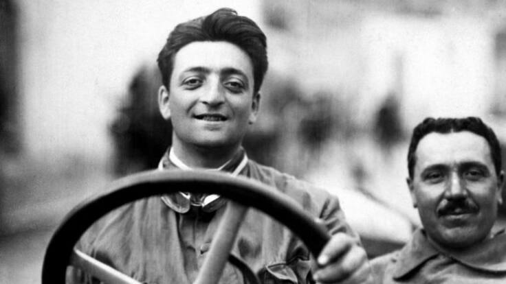
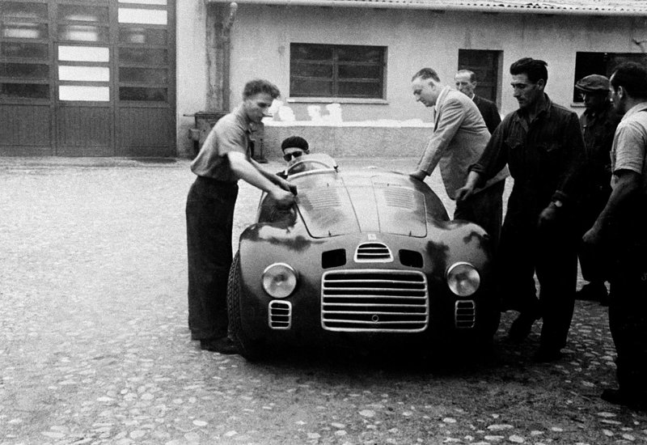
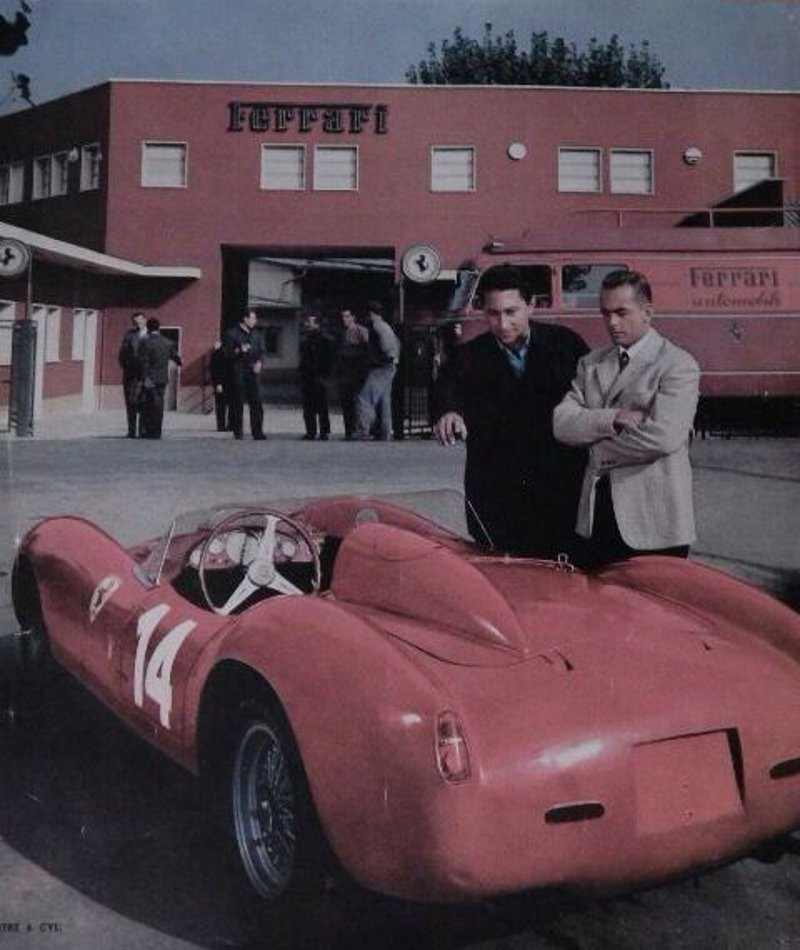
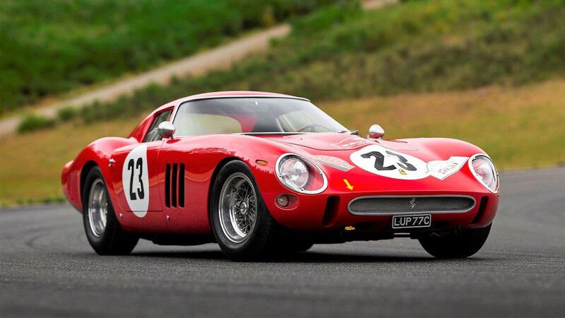
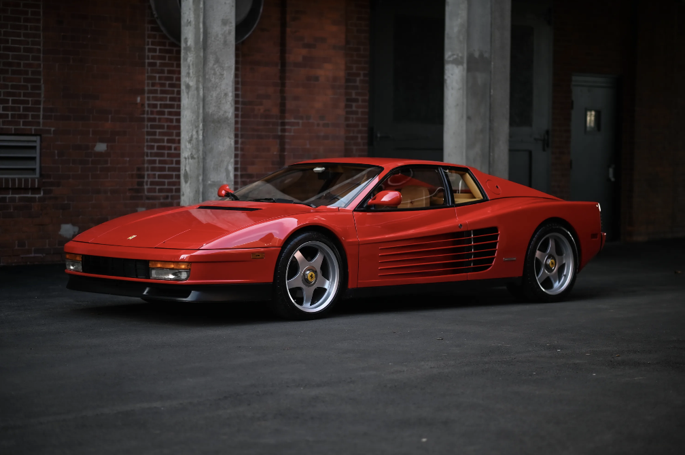
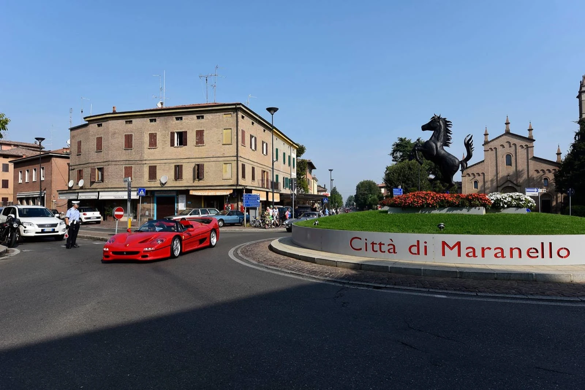
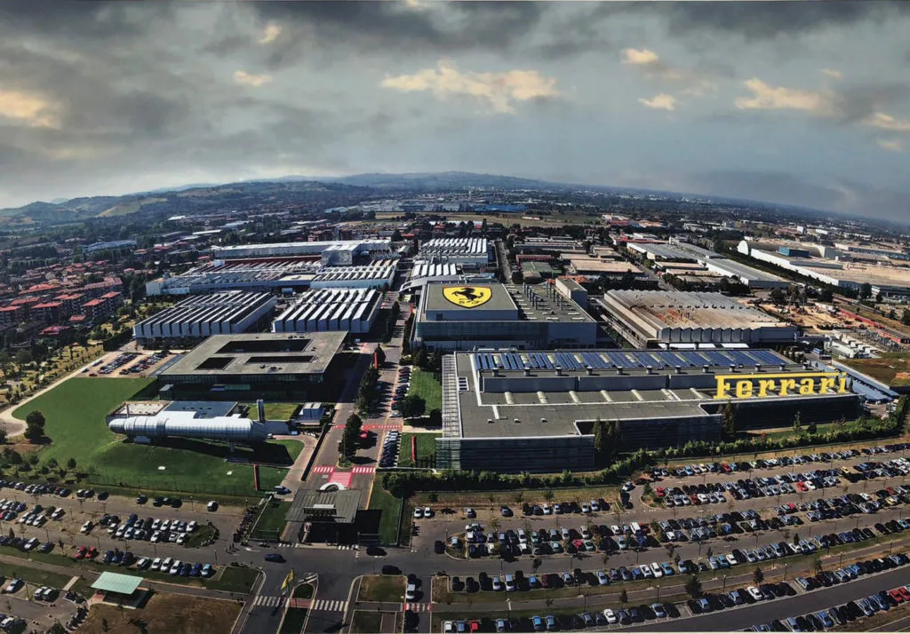
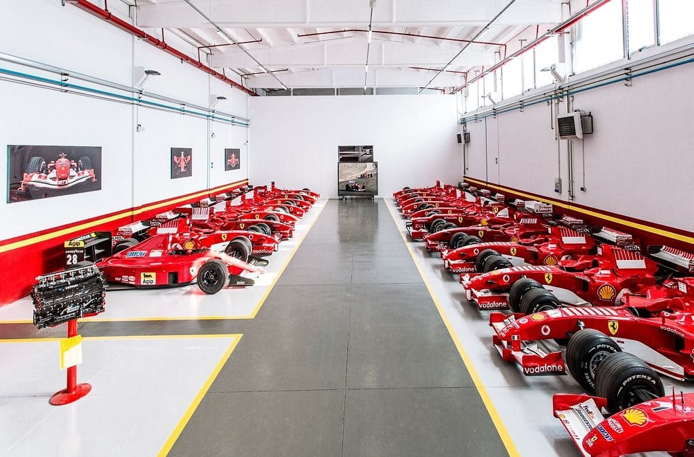

Enzo Ferrari nació en 1898 en Modena, Italia. Luego de servir en la primera guerra mundial, ingresó como piloto de Alfa Romeo para disputar la competición de Targa Florio, pero su verdadera ambición era fundar su propia escudería. En 1929 creó la Scuderia Ferrari, inicialmente preparando vehículos de carreras para Alfa Romeo, pero rápidamente comenzó a ganar reputación por el espíritu competitivo que caracterizaba a Enzo

Enzo Ferrari
Ferrari corriendo en Targa Florio (1922)
Escudería Ferrari-Alfa Romeo
Nacimiento de la marca
En 1947 Ferrari presentó el Ferrari 125S, el primero de la marca y también el primero en emplear el motor V12, que se convirtió en el sello de la marca. Debutó en el circuito de Pialeza y, dos semanas después, logró su primera victoria en el Gran premio de Roma. Ese mismo año lograron otras 6 victorias, consolidando a Ferrari como una marca competitiva, ambiciosa y superior. En 1950 ingresaron al Campeonato Mundial de Formula 1. En 1951 llegó la primer victoria y en 1952-1953, de la mano de Alberto Ascari, consiguió sus primeros campeonatos.

Ferrari 125S, el primero de la marca

Un 250 Testarossa en las afueras de Maranello
Alberto Ascari corriendo para Ferrari
Autos legendarios
La marca comenzó a producir autos deportivos destinados a la carretera. Famoso es el aclamado Ferrari 250 GTO, que se considera el mejor automóvil jamás fabricado. El 365 GTB/ Daytona combinaba un diseño afilado y agresivo de carrocería Pininfarina con un rendimiento que lo convirtió en el auto de calle mas rápido de su época. Ya en los 80', el Ferrari Testarossa se convirtió un icono absoluto de la marca con sus aletas laterales, su sonido característico y su motor FLAT-12 de 390CV que lo posicionaron entre los autos mas distinguidos y codiciados del mundo. Al Testarossa le siguió la era de los SUPER-FERRARI, los modelos mas exclusivos de la marca, con innovaciones traídas directamente de la Formula 1. Conocidos son los F40 y F50. Ya en el 2002, el Ferrari Enzo dio un salto tecnológico categórico, combinando aerodinámica activa, fibra de carbono y un motor V12. El Enzo cambió la idea de lo que significaba un deportivo Ferrari.

Ferrari 250 GTO

Ferrari Testarossa, ícono de los 80
Ferrari f40
Maranello
La ciudad de Maranello, en la región de Emilia-Romaña, es el corazón de Ferrari. Aquí se encuentran los principales centros de diseño y producción, la histórica fábrica, talleres de ensamblaje y el icónico museo Ferrari, que celebra la historia de la marca y sus logros en competición. Maranello simboliza la conexión entre tradición y modernidad, manteniendo vivo el espíritu de innovación que hizo de Ferrari un referente mundial. Maranello no es sólo la sede de Ferrari: es el alma de la marca, un lugar donde la historia, pasión y tecnología se unen para crear vehículos que son leyenda en el mundo.

Ciudad de Maranello, el corazón de Ferrari

La fábrica de Maranello

El museo de Maranello
Valores
Ferrari no es sólo una marca de automóviles: es un símbolo de excelencia, pasión y tradición. Los valores de la compañía reflejan su compromiso con la innovación, la competitividad y la calidad artesanal.
PASIÓN Y EMOCIÓN: Cada Ferrari se diseña para generar una experiencia única al volante, combinando intensidad, estética y un sonido inconfundible.
INNOVACIÓN TECNOLÓGICA: Desde sus orígenes, Ferrari ha llevado la tecnología de la Formula 1 a los autos de calle, combinando rendimiento extremo y seguridad.
EXCELENCIA ARTESANAL: Cada Ferrari es ensamblado con precisión por maestros especializados, asegurando que cada detalle cumpla con los estándares.
COMPETITIVIDAD Y LEGADO: Ferrari vive para competir y ganar. Su historia esta marcada por campeonatos y récords que consolidan su liderazgo en el automovilismo.
EXCLUSIVIDAD Y PRESTIGIO Ser dueño de un Ferrari significa formar parte de un mundo único, donde la tradición y la elegancia se combinan para ofrecer una leyenda sobre ruedas.